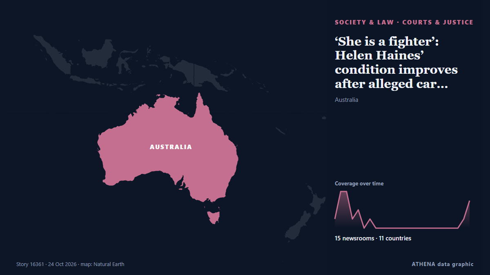

‘She is a fighter’: Helen Haines’ condition improves after alleged car attack

Helen Haines remains in hospital in Melbourne after surgeons amputated both her legs following Monday’s alleged attack. de Stuff
Relayé de façon indépendante par 15 médias dans 11 pays depuis le 21 oct. ; premier à l'annoncer : RTÉ News ; la couverture faiblit. ATHENA juge le risque faible (1.9/10), surtout en raison de la gravité des dommages décrits et de sa portée géographique et sectorielle. La confiance est de 88 % (élevée) : 15 médias indépendants le confirment, avec une fiabilité moyenne des sources de 78 %. Qui l'a rapporté : 5 médias en Royaume-Uni · United Kingdom, 2 médias en Canada, 2 médias en États-Unis · United States. La couverture s'est étendue de 21 oct. à 24 oct., sur 70 heures.
Pourquoi c'est important: Les changements juridiques et politiques modifient droits, obligations et services publics pour les personnes concernées.
Ce qui a changé : 4 nouveaux articles de 4 rédactions dans les 24 heures jusqu'au 24 oct..
Premier titre : Australian MP loses both legs after car attack
Les titres sont affichés en anglais, tels que publiés.
En un coup d'œil
Sélectionné, noté et rédigé par la méthodologie publiée d'ATHENA. Aucun rédacteur n'intervient sur un événement en particulier. Comment il est produit ›
| 21 Oct 03:37 UTC | 1 |
|---|---|
| 21 Oct 06:37 UTC | 4 |
| 21 Oct 09:37 UTC | 4 |
| 21 Oct 12:37 UTC | 1 |
| 21 Oct 15:37 UTC | 2 |
| 21 Oct 18:37 UTC | 0 |
| 21 Oct 21:37 UTC | 1 |
| 22 Oct 00:37 UTC | 0 |
| 22 Oct 03:37 UTC | 0 |
| 22 Oct 06:37 UTC | 0 |
| 22 Oct 09:37 UTC | 0 |
| 22 Oct 12:37 UTC | 0 |
| 22 Oct 15:37 UTC | 0 |
| 22 Oct 18:37 UTC | 0 |
| 22 Oct 21:37 UTC | 0 |
| 23 Oct 00:37 UTC | 0 |
| 23 Oct 03:37 UTC | 0 |
| 23 Oct 06:37 UTC | 0 |
| 23 Oct 09:37 UTC | 0 |
| 23 Oct 12:37 UTC | 0 |
| 23 Oct 15:37 UTC | 0 |
| 23 Oct 18:37 UTC | 0 |
| 23 Oct 21:37 UTC | 1 |
| 24 Oct 00:37 UTC | 3 |
| 22 Oct 07:05 UTC | 0.0 |
|---|---|
| 22 Oct 07:06 UTC | 1.9 |
| 24 Oct 01:55 UTC | 1.9 |
Pourquoi ces chiffres
Importance
Risque
Confiance
La couverture : qui l'a annoncé, et quand
titre tel que publié · ouvre l'original- RTÉ News · Irlande · IrelandAustralian MP loses both legs after car attack
- DW English · Allemagne · GermanyAustralian MP Helen Haines loses both legs after car attack as suspect appears in court
- The National · Émirats arabes unis · United Arab EmiratesAustralian MP has both legs amputated after ramming 'attack'
- Arab Times · Koweït · KuwaitAustralian politician who was hit by car has lost both legs
- The Independent · Royaume-Uni · United KingdomWhat is transverse myelitis? The rare condition experienced by MP Helen Haines’s alleged attacker
- CBC News · CanadaAustralian MP loses both legs after alleged vehicle attack as suspect appears in court
- ABC News (International) · États-Unis · United StatesAustralian politician who was hit by car has lost both legs
- Nile Post · Ouganda · UgandaAustralian MP loses both legs after alleged car attack, husband says
- CBS News (World) · États-Unis · United StatesPolitician who was intentionally hit by car loses both her legs
- The Independent · Royaume-Uni · United KingdomAustralian MP Helen Haines has both legs amputated after car ramming ‘attack’, husband says
- BBC News · Royaume-Uni · United Kingdom'Targeted' attack on much-loved MP leaves Australian town heartbroken
- Global News (World) · CanadaAustralian lawmaker loses both legs after alleged vehicle attack
- Taipei Times · Taïwan · TaiwanAustralian lawmaker lost legs in attack
- Stuff · Nouvelle-Zélande · New Zealand‘She is a fighter’: Helen Haines’ condition improves after alleged car attack
- SBS News · Australie · AustraliaHelen Haines' condition improves following alleged attack, but remains serious
- The Guardian · Royaume-Uni · United KingdomHelen Haines’s condition improves days after losing both legs from alleged attack
- BBC News · Royaume-Uni · United KingdomAustralian MP's condition improves after alleged car attack